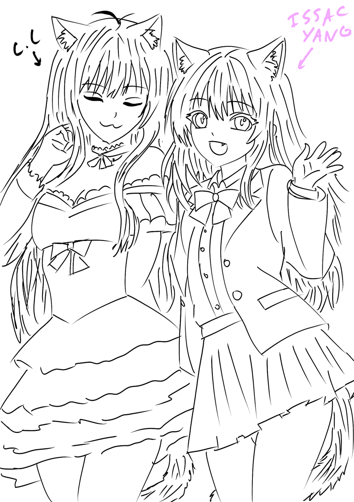

This one was gonna go to the grave with me but rest assured since this is my website about embarrassing/funny moments in my life I am willing to spill the beans. This is extremely niche C.C lore so please read thoroughly..
During COVID-19 while everyone was in their homes playing video games, me and my friend Isaac Yang felt entrepreneurial. We both are massive weebs and with the recent “Gawr Gura” (Shark Vtuber) hitting the top of the YouTube live charts we both decided to become one ourselves (by installing “REALITY”). We weren’t very successful but I would say we had our 2 seconds of fame when we pulled 70 viewers in. Why do you ask? Well I don't know about the status quo now but during that time being American/English speaking was rare on the app so a bunch of Japanese viewers trying to learn English joined our live so we could quiz them. The picture above is a trace of our avatars.
- “さようなら” - Chicken Connoisseur